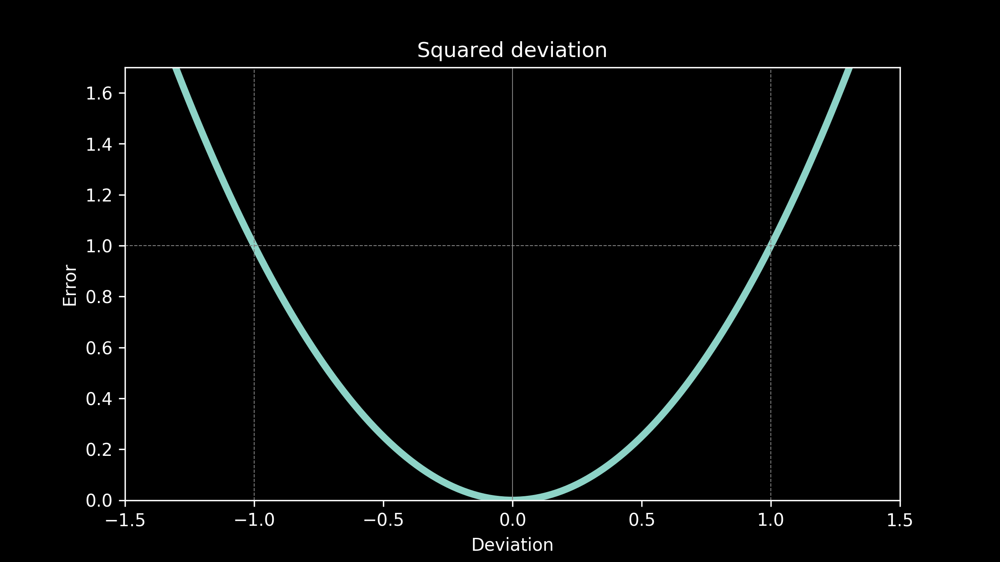
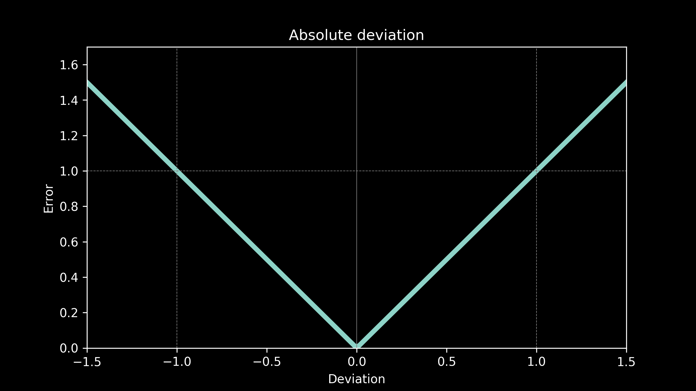
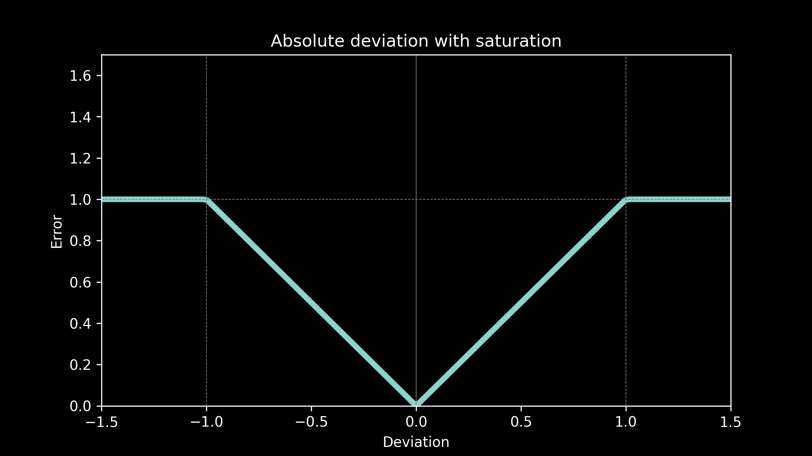
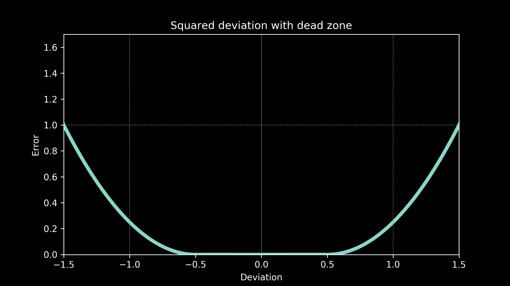
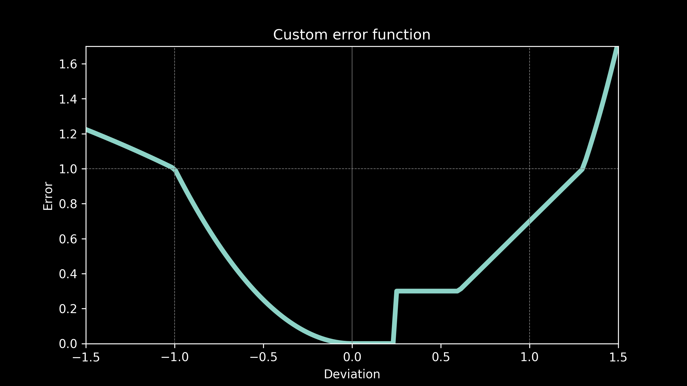

For all the content, including video and code, visit the course page for How Modeling Works.
Choosing an error function
When we go to fit a model to some data, it’s easy to overlook the choice of error function. Fitting the model is an exercise in optimization. It is finding the set of parameter values that minimizes a loss function. (If you need a refresher, check out the how optimization works series.)
The difference between a model and a measured data point is called deviation. The error function expresses how much we care about a deviation of a certain size. Are small errors OK, but large errors really bad? Or is being off by a little just as bad as being off by a lot? In business terms, we can think of the error function as how much it costs us in dollars to be wrong by a certain amount. In fact, error functions are also called cost functions.
The choice of error function depends entirely on how our model will be used.
Use case: squared deviation
Imagine our temperature predictions are being used to design a greenhouse. The thickness of the glass and the amount of insulation at the base are carefully selected to create an ideal growing environment. There won’t be any heaters or air-conditioners to modulate the temperature, just the passive heat flow, determined by the design of the greenhouse. The plants are hearty and can tolerate being off by a few degrees in any direction fairly well. It stunts them a little, but not catastrophically. However, the further the temperature gets from ideal, the more detrimental it is to the plants and quickly the effects become more severe. This suggests that the cost function is something like the square of the deviation.
Use case: absolute deviation
Now, we are designing a greenhouse again, but this time including heaters and coolers. That means we will be able to modulate the temperature in order to make it suitable for the plants, but the more heating and cooling we do, the more energy we will have to buy, the more money we will have to spend on it. The cost of being off in our prediction is related to how much it costs to correct for it, the energy cost to bring the temperature back to the appropriate range. This suggests an error function where the cost is proportional to the absolute value of the deviation.
All the models fit to our temperature data in part 1 used an absolute deviation error function.
Use case: Absolute deviation with saturation
Our temperature forecasts are now being used to make decisions about when to pre-heat or pre-cool an office building for a workday. Pre-heating and pre-cooling during the night allows a lower energy price and saves the company money. The cost of any deviations is the additional cost of daytime peak energy. This is proportional to the amount of time the equipment runs during the day, which in turn is directly proportional to the prediction error. However, above a certain prediction threshold no amount of the time heating or cooling will fully make up the difference, so the cost has a ceiling. The equipment just runs all day. This suggests an error function of absolute deviation with saturation.
Use case: Squared deviation with a don’t care region
Now our temperature predictions are being used in television forecasts. Our viewers don’t expect the predictions to be exact, so if they are off by a little bit there is no penalty. This gives us a "don’t care" region. There is no cost to being wrong by a small amount. However if the temperatures are off by much more than that, then viewers become very upset and are likely to switch to another television station for their weather reports. A quadratic curve gives us the steeply increasing cost associated with this.
Use case: custom error function
We can even handle much more complex cases. Imagine that our top notch business analytics team determines that our energy costs have a complicated relationship to prediction errors, say, something that looks like this.
That’s not a problem. We can use that just as easily as any of the other candidates we have considered. The only real constraint on our error function is that it doesn’t decrease as it gets further away from zero. It can follow any pattern we want as long as it always increases or remains flat.
The choice of error function makes a difference in which model will fit the best and what the parameter values of that model will be. Each one of these error functions would produce a different set of best fit parameters in our temperature model. The best fit curve will be different each time. Starting with the right error function can make a big difference in how useful our model is. The wrong error function can give us a model that is worse than useless.
Keep your eyes open for squared deviation as an error function. It’s a very common choice. So common in fact, that inexperienced modelers might assume it's the only choice. It has some very nice properties for mathematical analysis, and for that reason is favored for theoretical and academic work. But other than that, there is nothing that makes it special. Chances are it's not right for your application. If you spend some time carefully choosing your error function, you will ba glad you did.
Now that we have a solid foundation, in part 4 lets take a close look at splitting the data into training and testing data sets. It's harder than it looks.